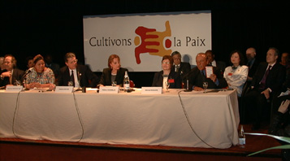

DES PRIX NOBEL DE LA PAIX ET LE DIRECTEUR GENERAL DE L'UNESCO LANCENT LE
MANIFESTE 2000 POUR UNE CULTURE DE LA PAIX ET DE LA NON-VIOLENCE
Paris, 4 mars {N°99-39} - Le Directeur général de l'UNESCO, Federico Mayor, et les
Prix Nobel de la paix Mairead Corrigan Maguire (Irlande du Nord),
Rigoberta Menchú Tum (Guatemala), et Adolfo Pérez Esquivel (Argentine),
ont lancé aujourd'hui le Manifeste 2000 pour une culture de la paix et
de la non-violence qui est destiné à générer un mouvement populaire
mondial en faveur de la paix, de la solidarité et de la tolérance. Le
maire de Paris a également assisté à l'événement.
Le mouvement et le Manifeste 2000 s'inscrivent dans le cadre de la
préparation, par l'UNESCO, de l'an 2000, proclamée Année internationale
de la culture de la paix par l'Assemblée générale des Nations Unies à
l'initiative de l'Organisation. L'UNESCO a été désigné coordonnateur
pour cette Année.
Le Manifeste cherche à obtenir l'engagement personnel des individus du
monde entier à souscrire les valeurs de paix, de tolérance, de partage
et de solidarité qui inspirent la culture de la paix et à les traduire
dans la réalité et au quotidien.
En six points, le Manifeste met en avant les valeurs suivantes :
respecter la vie et la dignité de chaque être humain ; pratiquer la
non-violence active ; partager temps et ressources matérielles en
cultivant la générosité, afin de mettre fin à l'exclusion, à l'injustice
et à l'oppression politique et économique ; défendre la liberté
d'expression et la diversité culturelle ; promouvoir une consommation
responsable ; contribuer au développement communautaire, avec la pleine
participation des femmes et dans le respect des principes démocratiques,
afin de créer, ensemble, de nouvelles formes de solidarité.
Présentant, à la Tour Eiffel, le Manifeste, Mairead Maguire a parlé
d'«un document historique ». « Ce que nous voulons, c'est atteindre le
coeur et l'esprit des gens, et pas seulement obtenir leurs signatures »,
a-t-elle déclaré en faisant référence aux 100 millions de signatures que
les Prix Nobel de la paix, qui ont écrit le Manifeste, et l'UNESCO
espèrent recueillir.
La militante pour la paix a souligné que l'objectif du Manifeste est
d'obtenir l'engagement individuel de chacun dans le monde entier à
mettre fin à la violence et aux tueries. Dans une allocution très
émouvante, elle a expliqué combien le monde pourrait être beau si les
valeurs exprimées dans la campagne pour la paix lancée aujourd'hui
pouvaient être traduites dans la réalité. Mais, a-t-elle ajouté, « pour
beaucoup trop de personnes, il est difficile de voir la beauté, quand on
n'a rien dans l'estomac et quand ses enfants meurent de maladies qui
auraient pu être prévenues ». Mme Maguire a déploré le fait que, malgré
les fantastiques progrès technologiques, aucune solution n'a été trouvée
au problème de la pauvreté.
Mairead Maguire a également lu les messages de soutien au mouvement de
la paix provenant du chef spirituel tibétain, le Dalaï Lama, et du
Président d'Afrique du Sud, Nelson Mandela. Elle a regretté le fait que
la Birmane Aung San Suu Kyi n'ait pu être associée au mouvement car «
elle n'est pas autorisée à communiquer avec le monde extérieur ».
Elle a conclu par un vibrant appel : « Nous ne devons pas avoir peur de
sortir dans notre monde. Croyez avec ferveur à votre pouvoir de changer
le monde. Il y a des millions et des millions de personnes de par le
monde qui désire la paix et la non-violence. Ce document nous donne le
pouvoir de changer le monde ».
Prenant alors la parole, Rigoberta Menchú a affirmé soutenir de tout son
coeur la culture de la paix. S'exprimant en tant que « survivante d'un
génocide » et en tant que « mère indigène », elle a souligné qu'« il n'y
a pas d'autre alternative que de soigner les blessures du passé. Nous
qui avons souffert, nous croyons quand même à la paix et nous parions
notre avenir sur elle ».
Appelant les signataires du Manifeste à s'impliquer activement dans la
création d'une culture de la paix, Rigoberta Menchú a déclaré : « Nous
ne voulons pas que nos enfants soient violents et commettent génocide,
torture et viols ».
L'enseignant, artiste et militant des droits de l'homme, Adolfo Pérez
Esquivel, a alors pris la parole pour les très nombreuses personnes
d'Amérique latine qui « ont été victimes de génocides, de dictatures et
de violence », et a déclaré que les enseignants devaient réévaluer leur
conception de l'éducation. « Quel est l'objectif de notre enseignement ?
» s'est-il interrogé. « En ne faisant que former de bons ingénieurs,
nous produisons des esclaves bien éduqués, » a-t-il déclaré en insistant
sur la nécessité d'apprendre aux jeunes à adhérer aux valeurs de paix et
de solidarité.
« Sans liberté, nous ne pouvons conquérir la paix, » a-t-il dit. « Nous
parlons de la liberté de trouver de nouvelles voies, car l'histoire que
nous apprenons est l'histoire de la violence ». Il a aussi souligné
l'aide que les artistes peuvent apporter à la diffusion du message de
paix car « l'art est le langage qui touche les gens directement ». M.
Pérez Esquivel a ajouté que « notre défi est de construire une nouvelle
société » et a dénoncé « le progrès qui ne sert qu'à quelques-uns tandis
que des millions d'autres restent exclus et marginalisés ».
Le Directeur général de l'UNESCO, Federico Mayor, a déclaré que « la
cause de la paix a aujourd'hui plus que jamais besoin de ce mouvement
pour lutter contre des siècles de culture de force et de coercition. A
l'aube de ce nouveau siècle et millénaire, nous avons besoin de chacun
pour assurer une transition et un nouveau départ vers une culture de la
paix et du dialogue, de la non-violence et de la tolérance ».
Federico Mayor a appelé les gouvernements, les parlementaires, les
médias et les maires à soutenir cette initiative. « Les maires, » a-t-il
dit, « occupent une position privilégiée pour prendre des mesures pour
les jeunes qui représentent l'avenir ». Il a ensuite mis l'accent sur
l'importance de la paix en tant que « condition préalable sans laquelle
il n'y a pas de justice, de liberté, de liberté d'expression ou de
développement ». Il a également souligné que « nous avons le moyen de
lutter contre la violence. [...] Nous savons comment élever les défenses
de la paix, grâce à l'éducation, grâce au partage du savoir, et en
favorisant la diversité culturelle et la créativité ».
Parlant du XXe siècle comme un siècle de violence et de mort, il a
déclaré : « Nous en avons payé le prix en vies humaines. Nous devons
maintenant payer pour la paix. Le grand défi auquel nous faisons face
maintenant est d'apprendre à respecter l'autre, à écouter l'autre ».
Federico Mayor a également parlé de l'importance de combattre la
pauvreté pour réussir le changement vers une culture de la paix et a
ajouté que « la démocratie est la meilleure façon de combattre la
pauvreté. La liberté, la solidarité, la démocratie et la paix sont les
piliers » sur lesquels un meilleur futur peut être fondé. « Main dans la
main, nous pourrons écrire le futur, lorsque nous aurons réalisé le
potentiel de la mobilisation, » a-t-il déclaré, ajoutant : « Cultivons
la paix chaque jour. La paix est comme la liberté, elle ne nous est pas
donnée, nous devons la construire ».
M. Mayor a annoncé que David Trimble, Premier ministre désigné d'Irlande
du Nord, avait adressé un message de soutien à cette initiative. Dans
son message, il appuie les objectifs du Manifeste 2000 « reconnaissant
la diversité culturelle, le respect de la vie humaine et oeuvrant
activement en faveur de la non-violence ».
Le maire de Paris, Jean Tiberi, a annoncé que la ville soutiendra le
Manifeste : « Elle va le diffuser dans son réseau scolaire [et] dans
son réseau d'information ». Il a également déclaré : « Paris, ville de
la fraternité, creuset des différentes cultures, ne pouvait que
constituer l'écrin particulier pour accueillir le premier geste public
de ce programme pour une culture de la paix et de la non-violence ».
Le Directeur général de l'UNESCO a présenté le logo de l'Année
internationale de la culture de la paix, - une représentation stylisée
de deux mains entrelacées -, conçu par l'artiste allemande Barbara
Blickle, et le graphiste espagnol Luis Sarda de Abreu.
Enfin, Federico Mayor a salué des représentants d'une centaine de jeunes
« messagers de la paix » qui ont signé le Manifeste et participeront à
la collecte de nouvelles signatures.
****
Le Manifeste peut être consulté - et signé - sur Internet :
www.unesco.org/manifesto2000
UNESCOPRESSE EN LIGNE
|